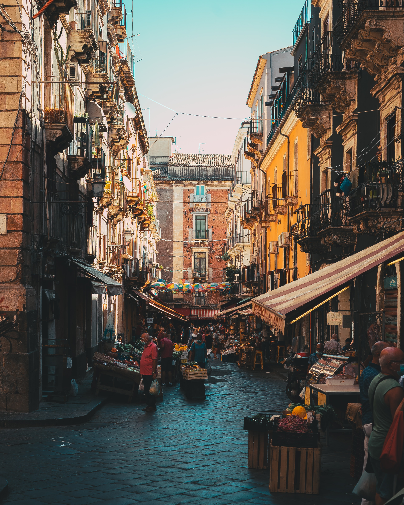

Piscarìa
La Pescheria (Piscarìa in Sicilian) is the ancient fish market of the city of Catania and is included in the tourist route for the folklore content that you breathe passing among the fishmongers' stalls.
Only by trying this experience can one realize how picturesque this market can be, which can only be compared in the twin market of the Vucciria in Palermo: the market is always crowded and the incessant shouting (la vuciata) of the sellers creates an Arab souk background and you can breathe the typical atmosphere of a medina quarter.
